실내건축기사(구) (2007-05-13 기출문제)
1과목: 실내디자인론
1. 실내디자인의 계획과정에 대한 설명 중 옳지 않은 것은?
- 기획은 공간의 사용목적, 예산, 환성 후 운영에 이르기까지의 전체 관련사항을 종합 검토한다.
- 설계는 구체적이고 세부적인 검토를 하여 시공자, 제작자에게 제작, 시공할 수 있도록 지시하는 실제적 과정이다.
- 계획은 공사감리 및 시공에 관한 분야를 집중적으로 다루는 마지막 과정이다.
- 설계는 기본설계와 실시설계로 구분한다.
(정답률: 79%)

2. 선에 대한 설명으로 옳지 않은 것은?
- 점이 이동한 궤적이며 면의 한계, 교차에서 나타난다.
- 선은 어떤 형상을 규정하거나 한정하고, 면적을 분할한다.
- 선은 길이, 폭, 부피만 있고 위치는 없다.
- 수직선은 구조적인 높이의 존엄성을 느끼게 한다.
(정답률: 79%)
3. 은행의 실내계획에 대한 설명 중 옳지 않은 것은?
- 영업장과 객장의 효율적 배치로 사무 동선을 단순화하여 업무가 신속히 처리되도록 한다.
- 은행의 고유의 색채, 심볼마크 등을 실내에 도입하여 이미지를 부각시킨다.
- 도난방지를 위해 고객에게 심리적 긴장감을 주도록 영업장과 객장은 시각적으로 차단시킨다.
- 객장은 대기공간으로 고객에게 안전하고 편리한 서비스를 제공하는 시설을 구비하도록 한다.
(정답률: 79%)
4. 실내를 구성하는 요소 중 벽에 관한 설명으로 옳지 않은 것은?
- 자연, 재해, 타인 등 외부세계에 대한 침입 방어의 기능을 갖는다.
- 공간을 에워싸는 수직적 요소로 수평방향을 차단하여 공간을 형성하는 기능을 갖는다.
- 높이 1800mm 정도의 벽은 두 공간을 상징적으로만 분리, 구분한다.
- 실내분위기를 형성하며 특히 색, 패턴, 질감, 조명등에 의해 그 분위기가 조절된다.
(정답률: 100%)
5. 주거공간의 부엌에 대한 설명 중 옳은 것은?
- 일반적으로 부엌의 크기는 주택 연면적의 3% 정도가 가장 적당하다.
- 작업대의 배치유형 중 일렬형은 대규모부엌에 가장 적당하다.
- 작업대는 일반적으로 준비대→개수대→조리대→가열대→배선대 순으로 하는 배치가 이상적이다.
- 일반적으로 작업대의 높이는 600mm ~ 650mm, 길이는 750mm ~ 800mm가 적당하다.
(정답률: 88%)
6. 실내디자인의 과정을 “프로그래밍-디자인-시공-사용 후 평가”로 볼 때 사용 후 평가에 대한 설명으로 적합하지 않은 것은?
- 시공 후 실내디자인에 대한 거주자의 만족도를 조사하는 것이다.
- 문제점을 발견하고 다음 작업의 기초자료로 활용한다.
- 다음 작업의 시행착오를 줄이기 위하여 디자이너가 평가하는 것이 보통이다.
- 입주 후 충분한 시간이 경과한 후 실시하는 것이 결과의 정확도를 높일 수 있다.
(정답률: 93%)
7. 치수계획에 있어 적정치수를 설정하는 방법이 아닌 것은? (α : 적정치수를 구하기 위한 조정치수)
- 평균치 -α
- 최소치 +α
- 목표치 ±α
- 최대치 -α
(정답률: 25%)
8. 실내디자인의 원리 중 조화ㆍ통일ㆍ변화에 대한 설명으로 옳지 않은 것은?
- 조화란 전체적인 조립방법이 모순없이 질서를 잡는 것을 말한다.
- 조화에는 시각적으로 동일한 요소간에 이루어지는 유사조화와 이질적인 요소간에 이루어지는 대비조화가 있다.
- 통일은 변화와 함께 모든 조형에 대한 미의 근원이 되는 원리이다.
- 통일과 변화는 각각 독립된 것으로 상호대립관계에 있다.
(정답률: 42%)
9. 다음 중 VMD(visual merchandising)에 관한 설명으로 옳지 않은 것은?
- 상품과 고객사이에서 치밀하게 계획된 정보 전달수단으로 장식된 시각과 통신을 꾀하고자 하는 디스플레이의 기법이다.
- 상점의 영업방침을 기본으로 고객의 시각에 비치는 파사드만을 상점의 개성에 따라 통일된 이미지를 만들어 전개한다.
- VMD의 구성요소 중 VP는 점포의 주장을 강하게 표현하며 IP는 구매시점상에 상품정보를 설명한다.
- 다른 상점과 차별화하여 상업공간을 아름답고 개성있게 하는 것도 VMD의 기본 전개방법이다.
(정답률: 87%)
10. 다음의 의자에 대한 설명 중 옳지 않은 것은?
- 오토만(Ottoman)은 좀더 편안한 휴식을 위해 발을 올려 놓는데도 사용된다.
- 폴업체어(Pull-up chair)는 필요에 따라 이동시켜 사용할 수 있는 간이의자이다.
- 스툴(stool)은 등받이와 팔걸이가 없는 형태의 보조 의자이다.
- 라운지 체어(Lounge chair)는 오래전부터 식탁과 함께 사용되어온 식사를 위한 의자로 다이닝 체어라고도 한다.
(정답률: 80%)
11. 일종의 치수특정단위로 미터법과 같은 절대적, 추상적 단위가 아니라 건축, 실내가구의 디자인에 있어 그 종류, 규모에 따라 계획자가 정하는 상대적, 구체적인 기준의 단위는?
- 파티션
- 모듈
- 패턴
- 모티브
(정답률: 93%)
12. 소파의 골격에 쿠션성이 좋도록 솜, 스폰지 등의 속을 많이 채워 넣고 천으로 감싼 소파로, 구조, 형태상 뿐만 아니라 사용상 안락성이 매우 큰 것은?
- 체스터필드
- 카우치
- 풀업체어
- 스툴
(정답률: 65%)
13. 형태 심리학의 지각 원리에 대한 설명 중 옳지 않은 것은?
- 근접성은 가까이 있는 시각적 요소들을 패턴이나 그룹으로 인지하게 되는 특성을 말한다.
- 유사성은 형태, 규모, 색 등의 시각적 요소가 유사 할 때 서로 연관되어 보이는 현상이다.
- 폐쇄성이란 완전한 시각 요소들을 불완전한 것으로 지각하는 성향을 말한다.
- 도형과 배경의 법칙은 도형과 배경이 번갈아 보이면서 다른 형태로 지각되는 심리이다.
(정답률: 58%)
14. 다음 중 실내 공간의 동선계획에 관한 설명으로 가장 부적당한 것은?
- 동선은 빈도, 속도, 하중의 3요소를 가진다.
- 동선의 빈도가 높으면 안정감을 얻을 수 있다.
- 상호 관계가 밀접한 거실과 현관은 근접시킨다.
- 동선이 짧으면 효율적이지만 공간의 성격에 따라 길게 처리할 수도 있다.
(정답률: 89%)
15. 실내디자인의 과정에서 고려할 외부적 조건에 해당되지 않은 것은?
- 일조조건
- 의뢰인의 공사예산
- 개구부의 위치와 치수
- 공간의 형태 및 규모
(정답률: 84%)
16. 공간의 분할 중 심리도덕적 구획의 방법에 속하지 않은 것은?
- 커튼
- 바닥면의 변화
- 천장면의 변화
- 낮은 칸막이
(정답률: 74%)
17. 다음 중 실내디자이너의 역할과 가장 관계가 먼 것은?
- 실내디자인에 대한 조언을 해주고 도면을 그려준다.
- 실내디자인에 사용될 조형물을 직접 제작한다.
- 실내디자인에 필요한 물자와 용역을 확정, 주문, 설치한다.
- 실내디자인의 실체가 되는 결과물을 완성한다.
(정답률: 34%)
18. 실내디자인의 구성원리 중 일반적으로 규칙적인 요소들의 반복으로 디자인에 시각적인 질서를 부여하는 통제된 운동감각을 의미하는 것은?
- 통일
- 균형
- 리듬
- 질감
(정답률: 88%)
19. 고대로부터 가장 이상적인 비례로 여겨지던 황금비의 비율은?
- 1 : 1.414
- 1 : 1.618
- 1 : 1.732
- 1 : 3.141
(정답률: 93%)
20. 실내디자인 프로세스에서 실시설계에 대한 설명으로 옳지 않는 것은?
- 가구는 직접 디자인하거나 기성품 중에서 선택하여 가구배치도 등을 작성한다.
- 마감재료에 대한 도면 표기는 판매되는 제품 명칭을 정확히 사용하여야 한다.
- 조명 및 전기 사용계획에 의하여 전기배선도, 적정조도 계산서 등을 작성한다.
- 실시설계 도서에는 샘플보드, 투시도, 특기시방서, 내역서 등도 포함된다.
(정답률: 25%)
2과목: 색채학
21. 색의 3속성에 대한 설명 중 옳은 것은?
- 핑크색은 초콜릿색에 비하여 명도가 낮다.
- 톤(Tone)은 색상과 채도를 포함하는 복합개념이다.
- 새로운 안료가 개발될수록 높은 채도의 색을 표현할 수 있다.
- 채도가 일정하면 주파장 값도 같다.
(정답률: 54%)
22. 순색에 무채색의 포함량이 많아지면 채도의 변화는?
- 채도가 높아진다.
- 채도가 맑아진다.
- 채도가 밝아진다.
- 채도가 낮아진다.
(정답률: 92%)
23. 다음 표색계에 관한 설명으로 잘못된 것은?
- 오스트발트 표색계는 헤링의 4원색을 기본으로 하였다.
- 먼셀 표색계의 5원색은 R, Y, G, B, P 이다.
- 오스트발트 표색계에서는 어떤 색상이라도 W + B+ C의 혼합량은 100%로 되어 있다.
- 오스트발트의 색입체를 색나무(color tree)라고 한다.
(정답률: 46%)
24. 다음 중 한국산업규격에서 유채색의 기본색 이름이 아닌 것은?
- 분홍
- 밤색
- 갈색
- 초록
(정답률: 77%)
25. 오스트발트 표색계의 순색량은 무엇으로 표기하는가?
- C
- W
- H
- B
(정답률: 59%)
26. 다음 색채조화의 공통되는 원리가 아닌 것은?(오류 신고가 접수된 문제입니다. 반드시 정답과 해설을 확인하시기 바랍니다.)
- 질서의 원리
- 유사의 원리
- 대비의 원리
- 모호성의 원리
(정답률: 50%)
27. 주위색의 영향으로 오히려 인접색에 가깝게 느껴지는 경우를 무엇이라 하는가?
- 정의 잔상
- 연변대비
- 동화현상
- 면적대비
(정답률: 64%)
28. 상품 배색의 실제 요령에 관한 설명 중 잘못된 것은?
- 색을 사용할 사람의 성별, 나이, 교양수준 등을 고려한다.
- 색채 이론적 원리대로만 충실하게 배색한다.
- 색이 사용되는 바탕의 재질을 고려한다.
- 사물의 기능이나 용도에 부합되도록 배색한다.
(정답률: 95%)
29. 7월 탄생석(보석)의 색으로 힘, 권력 등을 상징하고, 심장질환 치료 등의 효과와 의미를 갖는 색은?
- 녹색
- 빨강
- 파랑
- 보라
(정답률: 65%)
30. SD법으로 제품의 색채 이미지를 조사하려고 한다. 단어의 이미지가 잘못 짝지어진 것은?
- 부드럽다 – 딱딱하다
- 따뜻하다 – 차갑다
- 동적이다 – 정적이다
- 화려하다 – 아름답다
(정답률: 80%)
31. 아파트 건축물의 색채 기획시 고려해야 할 사항이 아닌 것은?
- 개인적인 기호에 의하지 않고 객관성이 있어야 한다.
- 주변 환경과 관계없이 독특한 디자인으로 색채조절을 한다.
- 전체적으로 질서가 있어야 하며 적당한 변화가 있어야 한다.
- 주거민을 위한 편안한 디자인이 되어야 한다.
(정답률: 알수없음)
32. 서로 조화되지 않는 두 색을 조화되게 하기 위한 일반적인 방법으로 가장 타당한 것은?
- 두 색의 사이에 백색 또는 검정색을 배치하였다.
- 두 색 중 한 색과 반대되는 색을 두 색의 사이에 배치하였다.
- 두 색 중 한 색과 유사한 색을 두 색의 사이에 배치하였다.
- 두 색의 혼합색을 만들어 두 색의 사이에 배치하였다.
(정답률: 70%)
33. 색의 대비에 관한 설명 중 맞는 것은?
- 동시대비는 색의 3속성의 차이에 변화가 일어나는 것이다.
- 나란히 높인 두 색이 혼합되어 보이는 것을 대비라한다.
- 계시대비는 위치에 따라 색들이 달라 보이는 현상이다.
- 동시대비는 시간차를 두고 나타나는 착시현상이다.
(정답률: 47%)
34. 빨강 바탕 위의 보라색은 실제 보라색보다 어떻게 달라져 보이는가?
- 붉은 기미를 띤다.
- 노랑 기미를 띤다.
- 푸른 기미를 띤다.
- 회색 기미를 띤다.
(정답률: 50%)
35. 색의 시각적 특성에 대한 설명 중 옳은 것은?
- 난색계는 한색계보다 후퇴해 보인다.
- 배경색과 명도차가 적은 어두운 색은 진출해 보인다.
- 저채도의 배경색에 고채도의 색은 후퇴해 보인다.
- 고명도, 고채도의 색은 진출해 보인다.
(정답률: 85%)
36. 한국의 전통색 중 동쪽 봄을 의미하는 오정색은?
- 청색
- 녹색
- 백색
- 홍색
(정답률: 75%)
37. 일정한 거리를 보면 두 개의 색이 하나의 색으로 보이는 병치현상을 설명하였고, 인상파 화가에게 큰 영향을 준 색채학자는?
- 오그덴 루드
- 맥스웰
- 오스트발트
- 알버트 먼셀
(정답률: 18%)
38. 색의 시간성에 대한 색채계획으로 잘못된 것은?
- 운동선수의 난색 계열 유니폼은 속도감이 높아져 보여 상대편의 심리를 위축시킨다.
- 대합실에 난색 계열을 사용하여 기다리는 시간을 짧게 느끼게 했다.
- 커피숍에 난색 계열을 사용하여 테이블 회전수를 늘렸다.
- 사무실에 한색 계열을 사용하여 시간의 지루함을 없앴다.
(정답률: 32%)
39. 바나나의 색이 노랗게 보이는 이유는?
- 다른 색은 흡수하고, 노란 색광만 반사하기 때문
- 다른 색은 반사하고, 노란 색광만 흡수하기 때문
- 다른 색은 굴절하고, 노란 색광만 투과하기 때문
- 다른 색은 반사하고, 노란 색광만 투과하기 때문
(정답률: 80%)
40. 색채와 감정에 관한 내용 중 틀린 것은?
- 흥분상태의 환자 병실은 푸른색으로 칠해준다.
- 음식점 인테리어에 주황색을 사용한다.
- 무거운 도구들은 저명도, 저채도로 칠해준다.
- 증권사, 은행 등의 C. I. 에는 파란색 계열을 사용 한다.
(정답률: 44%)
3과목: 인간공학
41. 다음 중 신체부위의 운동 형태와 그 예를 바르게 나열한 것은?
- 연속동작 : 부품, 공구 다루기
- 조작동작 : 망치질
- 반복동작 : 자동차 핸들의 조종
- 계열동작 : 피아노 연주, 타이핑
(정답률: 70%)
42. 다음 중 인체측정 자료의 적용시 하위 백분위 수에 의한 최대 치수로 설비를 디자인해야 할 사항이 아닌 것은?
- 선반의 높이
- 의자의 높이
- 등산용 로프의 강도
- 엘리베이터 조작 버튼의 높이
(정답률: 58%)
43. 다음 중 눈의 시세포에 관한 설명으로 옳은 것은?
- 사람의 한 눈에는 1억3천만여개의 간상세포가 있다.
- 원추세포는 색을 구분할 수 없다.
- 간상세포는 난색계열의 색을 구분할 수 있다.
- 원추세포의 수는 간상세포의 수보다 많다.
(정답률: 53%)
44. 다음의 도형이 지니는 시지각 현상은?
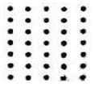
- 접근성
- 유사성
- 가속성
- 폐쇄성
(정답률: 42%)
45. 1촉광(cd)의 점광원으로부터 다음 내용과 같은 조건에서의 조도를 비교하고자 한다. 다음 중 옳은 것은?
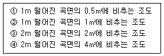
- ➀의 조도는 ➁의 조도보다 높다.
- ➀의 조도는 ➃의 조도와 같다.
- ➀의 조도는 ➁의 조도와 같다.
- ➀ ~ ➃의 조도는 모두 각기 다르다.
(정답률: 20%)
46. 다음 중 소음수준의 측정단위로 표시되는 것은?
- dB(A)
- dB(C)
- dB(F)
- dB(L)
(정답률: 32%)
47. 감각기관이 감수하는 최대 정보의 양이 초당 10억 bit일 경우, 신경접속 이후 의식에서 처리되는 정보의 양은 약 얼마인가?
- 16000 bit/s
- 160 bit/s
- 16 bit/s
- 0.16 bit/s
(정답률: 32%)
48. 다음 그림과 같은 작업에서 신체 활동에 따르는 에너지 소비량이 가장 큰 것은?
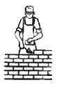
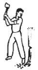
(정답률: 53%)
49. 사무실 설계에서 복도쪽의 출입문 위치에 따라 어느 정도 소음을 줄일 수 있는데 다음 중 가장 적합한 것은?
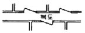
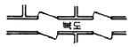
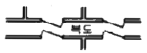
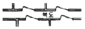
(정답률: 47%)
50. 다음 중 눈의 조절작용의 양을 나타내는 단위는?
- SIL
- diopter
- dB
- clo
(정답률: 22%)
51. 다음 중 소리의 현상이 아닌 것은?
- 순응(順應)
- 반사(反射)
- 회절(回折)
- 공명(共鳴)
(정답률: 46%)
52. 다음 중 아이콘(Icon)의 설명으로 틀린 것은?
- 디스플레이 상에 표시되는 의미 또는 기능을 가진 그림 기호이다.
- 기능에 연결되는 메타포(metaphor)를 도식화한 것이다.
- 디스플레이상의 부가가치 향상과 정량적인 조작성 향상을 유도한다.
- 기능의 도식화로 기능의 명약화를 향상시키는 것이다.
(정답률: 50%)
53. 다음 중 인지되기 쉬운 형상의 순위로 옳은 것은?
- 삼각형 ＞ 정사각형 ＞ 원
- 직사각형 ＞ 원 ＞ 마름모
- 원 ＞ 마름모 ＞ 삼각형
- 정사각형 ＞ 원 ＞ 직사각형
(정답률: 46%)
54. 다음 중 근육에 공급되는 산소량이 부족한 경우 나타나는 현상으로 옳은 것은?
- 당원은 산소 없이 호기성(aerobic) 과정에 의해 젖산으로 축적된다.
- 젖산은 혐기성(anaerobic) 과정에 의해 물과 CO2로 분해되어 열과 에너지로 발산된다.
- 젖산과 신체활동 수준은 관계가 없다.
- 혈액 중에 젖산이 축적된다.
(정답률: 44%)
55. 다음 중 고막의 미세한 운동을 조절하고, 내이에 전달하는 기능을 가진 귀의 내부 기관은?
- 중이
- 외이
- 외이도
- 귀바퀴
(정답률: 59%)
56. 다음 중 제품디자인에 있어 인간공학적인 고려대상으로 볼 수 없는 것은?
- 개인차를 고려한 디자인
- 하드웨어의 신뢰성 향상
- 인간의 성능 향상
- 사용 편리성의 향상
(정답률: 50%)
57. 다음 중 양립성(compatibility)에 관한 설명으로 틀린 것은?
- 청색은 정상을 나타내는 것과 같은 연상의 양립성은 개념적 양립성이다.
- 공간적 양립성은 표시장치의 이동방향이 조종장치의 이동방향과 일치할 때를 가리킨다.
- 표시장치의 이동방향과 조종장치의 이동방향이 다르면 인간실수가 증가된다.
- 양립성이 클수록 자극에 대한 반응속도는 빨라진다.
(정답률: 13%)
58. 작업대 높이의 설계시 고려해야 할 사항 중 잘못된 것은?
- 개개인에게 맞는 조절식이 좋다.
- 섬세한 작업일수록 팔꿈치 높이보다 약간 낮아야한다.
- 거친 작업대에는 팔꿈치 높이보다 약간 낮은 편이 좋다.
- 입식 작업대는 선 자세에서 팔을 굽혔을 때의 팔꿈치 높이를 기준으로 설계한다.
(정답률: 54%)
59. 다음 중 “인간관계가 작업 및 작업공간의 설계에 못지 않게 생산성에 큰 영향을 미친다”라는 의미의 법칙은?
- 호오손(Hawthorne)법칙
- 페크너(Fechner)법칙
- 웨버(Weber)법칙
- 밀러(Miller)법칙
(정답률: 15%)
60. 다음 시각적 표시장치의 지침 설계 원칙 중 틀린 것은?
- 뾰족한 지침을 사용할 것
- 지침을 눈금면과 밀착시킬 것
- 지침의 색은 선단에서 눈금의 중심까지 칠할 것
- 지침의 끝은 작은 눈금과 겹치도록 할 것
(정답률: 60%)
4과목: 건축재료
61. 다음의 목재에 관한 설명 중 옳지 않은 것은?
- 섬유포화점 이하에서는 함수율이 감소할수록 강도는 증대하며 인성은 감소한다.
- 기건상태에서 목재의 함수율은 15%정도이다.
- 섬유포화점 이상의 함수상태에서는 함수율의 증감에 비례하여 신축을 일으킨다.
- 열전도도가 낮아 여러 가지 보온 재료로 사용된다.
(정답률: 42%)
62. 목재 또는 식물질을 절삭, 파쇄 하여 작은 조각으로 하여 충분히 건조시킨 후 유기질 접착제인 합성수지 접착제를 첨가 혼합하여 열압제판한 목재의 가공품은?
- 파티클보드
- 집성목재
- 연질섬유판
- 경질섬유판
(정답률: 80%)
63. 콘크리트에 사용되는 혼화재료 중 혼화제에 속하는 것은?
- 실리카흄
- 고로슬래그
- 플라이애쉬
- 방청제
(정답률: 23%)
64. 콘크리트의 강도에 관한 설명 중 옳지 않은 것은?
- 인간강도는 압축강도의 약 1/10 ~ 1/13 정도이다.
- 휨강도는 압축강도의 약 1/5 ~ 1/7 정도이다.
- 이형철근의 부착강도는 원형철근의 2배 정도이다.
- 전단강도는 압축강도의 약 1/1 ~ 1/1.5 정도이다.
(정답률: 27%)
65. 금속부식에 대한 대책으로 틀린 것은?
- 가능한 상이한 금속은 이를 인접, 접속시켜 사용하지 않다.
- 균질한 것을 선택하고 사용할 때 큰 변형을 주지 않도록 한다.
- 큰 변형을 준 것은 가능한 불림하여 사용한다.
- 표면은 평활, 창결하게 하고 가능한 한 건조상태로 유지한다.
(정답률: 69%)
66. 온도에 따른 탄소강의 기계적 성질에 대한 설명으로 옳지 않은 것은?
- 연신율은 200~300℃ 에서 최소로 된다.
- 인장강도는 500℃ 정도에서 상온 강도의 약 1/2로 된다.
- 인장강도는 100℃ 정도에서 최대로 된다.
- 항복점과 탄성한계는 온도가 상승함에 따라 감소한다.
(정답률: 20%)
67. 플라스틱 재료의 일반적인 성질에 대한 설명 중 옳지 않은 것은?
- 플라스틱은 일반적으로 투명 또는 백색의 물질이므로 적합한 안료나 염료를 첨가함에 따라 상당히 광범위하게 채색이 가능하다.
- 플라스틱의 내수성 및 내투습성은 극히 양호하며, 가장 좋은 것은 폴리초산비닐이다.
- 플라스틱은 상호간 계면접착이 잘되며, 금속, 콘크리트, 목재, 유리 등 다른 재료에도 잘 부착된다.
- 플라스틱은 일반적으로 전기절연성이 상당히 양호하다.
(정답률: 19%)
68. 다음 중 하도용 도료에 속하는 것은?
- 염화고무계 도료
- 에폭시계 도료
- 방청 프라이머
- 내열도료
(정답률: 29%)
69. 다음의 석재에 관한 설명 중 틀린 것은?
- 석회석은 내화성, 내화학성이 크다.
- 대리석은 강도는 매우 높지만 풍화되기 쉽다.
- 화강암은 대재를 얻을 수 있으나 함유광물의 열팽 창계수가 다르므로 내화성이 약하다.
- 대리석은 실외용으로는 적합하지 않으나 실내장식재 또는 조각재로 적합하다.
(정답률: 27%)
70. 다음의 시멘트에 관한 설명 중 틀린 것은?
- 고로시멘트 : 초기강도는 작으나 장기강도는 크다.
- 중용열포틀랜드시멘트 : 건조수축이 작고 내황산염성이다.
- 백색포틀랜드 시멘트 : 건축물 내외면의 마감, 각종 인조석 제조에 사용된다.
- 알루미나시멘트 : 보통포틀랜드시멘트에 비해 응결및 경화시에 발열량이 작다.
(정답률: 13%)
71. 다음 중 강의 열처리방법과 그 목적의 연결이 옳지 않은 것은?
- 뜨임질 –인성증대
- 풀림 –경도증가
- 불림 –조직개선
- 담금질 –강도증가
(정답률: 26%)
72. 돌로마이트에 화강석 부스러기, 색모래, 안료 등을 섞어 정벌 바름하고 충분히 굳지 않은 때에 표면에 거친솔, 얼레빗 같은 것으로 긁어 거친 면으로 마무리한 것은?
- 리신바름
- 러프코트
- 섬유벽바름
- 회반죽바름
(정답률: 15%)
73. 다음의 바닥재에 관한 설명 중 옳지 않은 것은?
- 하중조건에 대응하는 강도 및 강성을 가져야 한다.
- 바닥이 전혀 미끄럽지 않을 정도로 표면 마찰저항이 높아야 한다.
- 자연석과 인조석은 일반적으로 차갑고 단단하므로 거주 성능이 나쁘다.
- 아스팔트계 시트는 내유성, 내산성이 우수하나 내알칼리성이 나쁘다.
(정답률: 19%)
74. 다음의 미장재료에 관한 설명 중 틀린 것은?
- 생석회에 물을 첨가하면 소석회가 된다.
- 돌로마이트 플라스터는 응결시간이 짧으므로 지연제를 첨가한다.
- 회반죽은 소석회에 모래, 해초풀, 여물 등을 혼합한 것이다.
- 반수석고는 가수 후 20~30 분에 급속 경화한다.
(정답률: 36%)
75. 다음의 점토제품 중 소성온도가 가장 높고 소지의 흡수성이 가장 작은 것은?
- 토기
- 도기
- 자기
- 석기
(정답률: 72%)
76. 다음 중 기경성이 아닌 미장 재료는?
- 소석회
- 시멘트 모르타르
- 회반죽
- 돌로마이트 플라스터
(정답률: 46%)
77. 페어 글라스라고도 불리우며 단열성, 차음성이 좋고 결로방지에 효과가 있는 유리는?
- 열선반사유리
- 강화유리
- 망입유리
- 복층유리
(정답률: 50%)
78. 시멘트나 점토제품 등에 발생하는 백화(efflorescence)의 억제대책과 가장 관계가 먼 것은?
- 저온에서 시공할 때에는 온도에 따른 양생기간을 충분히 지키는 것이 중요하다.
- 햇빛이 많이 비치는 곳에 백화발생이 비교적 많으므로 햇빛에 노출되는 면은 빨리 양생시킨다.
- 바람의 영향을 받지 않도록 바람막이 등을 설치하여 양생 시킨다.
- 바탕 또는 줄눈의 조직을 치밀하게 한다.
(정답률: 31%)
79. 다음 중 석탄을 235~315℃ 에서 고온건조하여 얻은 타르 제품으로서 독성이 적고 자극적인 냄새가 있는 유성 목재 방부제는?
- 크레오소트유
- 펜타클로르페놀(PCP)
- 플로오르화나트륨
- 콜타르
(정답률: 60%)
80. 다음의 벽돌에 대한 설명 중 옳지 않은 것은?
- 오지벽돌은 도로나 바닥에 까는 두꺼운 벽돌로서 식염유로 시유하여 소성한 벽돌이다.
- 다공벽돌은 점토에 톱밥, 겨, 탄가루 등을 혼합, 소성한 것으로 절단, 못치기 등의 가공이 우수하다.
- 구멍벽돌은 살 두께가 매우 얇고 벽돌 속이 비어있는 구조로 중공벽돌 또는 속빈벽돌이라고도 한다.
- 이형벽돌에는 아치벽돌, 원형벽체를 쌓는데 쓰이는 원형벽돌 등이 있다.
(정답률: 0%)
5과목: 건축일반
81. 다음 그림 중 와렌 트러스(Warren truss)는?
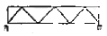
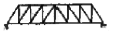
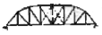
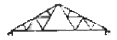
(정답률: 14%)
82. 철근콘크리트 구조에 관한 설명 중 옳지 않은 것은?
- 철근콘크리트 건축물은 라멘 구조로 하는 것이 보통이다.
- 띠철근 압축부재 단면의 최소치수는 200mm 이다.
- 띠철근 압축부재 단면의 단면적은 최소60,000mm2 이상이어야 한다.
- 1방향 슬래브의 배근에서 주근은 장변방향으로 배근한 철근이다.
(정답률: 50%)
83. 다음과 같은 작품을 남긴 르네상스 예술가는?
- 브루넬레스키
- 브라만테
- 미켈란젤로
- 월터 그로피우스
(정답률: 40%)
84. 아르누보(Art Nouveau)에 대한 설명으로 옳은 것은?
- 장식의 사용을 억제한 기능주의적 접근방식을 취했다.
- 모든 공연예술을 포함해서 크고 작은 여러 예술을 통일시키려 하였다.
- 빅터 호르타, 루이스 설리반, 월터 그로피우스를 중심으로 전개된 운동이다.
- 벽돌과 거친 콘크리트의 노출 및 강철을 주로 이용하였다.
(정답률: 22%)
85. 다음 중 방화구조에 속하지 않는 것은?
- 철망 모르타르로서 그 바름두께가 2cm 인 것
- 시멘트 모르타르위에 타일을 붙인 것으로서 그 두께의 합계가 2.5cm 인 것
- 심벽에 흙으로 맞벽치기 한 것
- 두께 2cm의 암면보온판
(정답률: 50%)
86. 환기, 난방 또는 냉방시설의 풍도가 방화구획을 관통하는 경우에는 그 관통부분 또는 이에 근접한 부분에 댐퍼를 설치해야 한다. 이 때 댐퍼의 재료로서 철판을 사용할 경우 철판의 두께는 최소 얼마 이상으로 하여야 하는가?
- 0.5 mm
- 1.0 mm
- 1.5 mm
- 2.0 mm
(정답률: 알수없음)
87. 목구조에 사용하는 보강철물로서 큰 보에 작은 보를 걸칠 때 사용하는 것은?
- 감잡이쇠
- ㄱ자쇠
- 안장쇠
- 펀칭메탈
(정답률: 27%)
88. 슬래브에서 휨 주철근의 간격 기준으로 옳은 것은? (단, 콘크리트 장선구조가 아닌 경우)
- 슬래브 두께의 4배 이하, 또한 400mm 이하
- 슬래브 두께의 4배 이하, 또한 600mm 이하
- 슬래브 두께의 3배 이하, 또한 400mm 이하
- 슬래브 두께의 3배 이하, 또한 600mm 이하
(정답률: 53%)
89. 목재 접합의 종류 중 좁은 폭의 널을 옆으로 붙여 그 폭을 넓게 하는 것으로 마루널이나 양판문의 양판 제작에 사용되는 것은?
- 쪽매
- 이음
- 맞춤
- 조합
(정답률: 28%)
90. 르네상스(Renaissance) 건축에 대한 설명으로 옳지 않은 것은?
- 르네상스란 다시 태어난다는 의미로 건축분야에서는 로마건축을 기본으로 한 건축이다.
- 고딕건축의 수직적인 요소를 탈피하고 수평적인 요소를 강조하였다.
- 대표적인 건축물 중 하나는 로마에 위치한 성 베드로 대성당이다.
- 건물의 구조적 안정성을 위하여 돔(dome)은 사용 하지 않았다.
(정답률: 67%)
91. 다음 중 건축법령상 내화구조로 인정될 수 없는 것은?
- 철재로 보강된 유리블록 또는 망입유리로 된 지붕
- 단면이 30cm × 30cm인 철근콘크리트조 기둥
- 벽돌구조로서 두께가 18cm인 벽
- 철골조로 된 계단
(정답률: 57%)
92. 다음의 벽돌구조에 관한 설명 중 틀린 것은?
- 벽돌 내쌓기는 보통
 1켜씩 또는
1켜씩 또는  2켜씩 내쌓고 내미는 정도는 2B 한도로 한다.
2켜씩 내쌓고 내미는 정도는 2B 한도로 한다. - 건물의 밖벽은 빗물에 젖고 습기가 차기 쉬우므로 벽돌벽을 이중으로 하고 중간을 띄어 쌓는 법을 공간 쌓기라 한다.
- 영식쌓기는 통줄눈이 생겨서 덜 튼튼하지만 외관이 좋아 강도보다는 미관을 위주로 하는 벽체에 주로 사용된다.
- 벽돌 내쌓기는 마구리 쌓기로 하는 것이 좋다.
(정답률: 55%)
93. 철근콘크리트구조의 성립요건에 대한 설명 중 옳지 않은 것은?
- 인장력은 콘크리트가 압축력은 철근이 부담한다.
- 콘크리트는 철근이 녹스는 것을 방지한다.
- 콘크리트와 철근이 강력히 부착되면 철근의 좌굴이 방지된다.
- 철근과 콘크리트의 선팽창계수는 거의 같다.
(정답률: 32%)
94. 고대 메소포타미아 건축의 특징과 가장 거리가 먼 것은?
- 아치 및 볼트의 기술을 개발하여 사용하였다.
- 건축의 주재료는 석재를 사용하여 건축하였다.
- 도시는 성곽으로 방어되어 있다.
- 지구랏트는 이집트의 피라미드와는 달리 종교적인 행사를 위한 신전이다.
(정답률: 13%)
95. 물분무등소화설비를 설치하여야 할 차고·주차장에 어떤 소방시설을 화재안전기준에 적합하게 설치하면 물분무등소화설비를 면제받을 수 있는가?
- 옥내소화전설비
- 연결송수관설비
- 자동화재탐지설비
- 스프링클러설비
(정답률: 82%)
96. 다음 중 6층 이상의 건축물의 거실에 설치하는 배연설비의 설치기준으로 틀린 것은? (단, 숙박시설)
- 배연구는 예비전원에 의하여 열 수 있도록 할 것
- 방화구획이 설치된 경우에는 그 구획마다 1개소 이상의 배연창을 설치하되, 배연창의 상변과 천장 또는 반자로부터 수직거리가 0.9m 이내일 것
- 배연구는 연기감지기 또는 열감지기에 의하여 자동으로 열 수 있는 구조로 하되, 손으로도 열고 닫을 수 있도록 할 것
- 배연창의 유효면적은 1m2이상으로서 그 면적의 합계가 당해 건축물의 바닥면적의 1/200 이상일 것
(정답률: 25%)
97. 바닥면적이 300제곱미터 이상인 문화 및 집회시설중 공연장의 개별관람석 출구에 대한 설명이 맞지 않는 것은?
- 출구는 관람석별로 2개소 이상 설치하여야 한다.
- 각 출구의 유효너비는 1.5미터 이상으로 한다.
- 출구의 유효너비의 합계는 개별관람석의 바닥면적 100제곱미터마다 0.6미터의 비율로 산정한 너비 이상으로 한다.
- 관람석으로부터 바깥쪽으로의 출구로 쓰이는 문은 안여닫이로 한다.
(정답률: 72%)
98. 철근콘크리트 부재축에 직각으로 설치되는 스터럽의 간격은 최대 얼마 이하로 하여야 하는가?
- 600 mm
- 700 mm
- 800 mm
- 1000 mm
(정답률: 37%)
99. 조선시대 서민주택의 지방유형분류 중 부엌, 정주간과 방들의 일부가 “田자형” 으로 구성되어 있으며 대청이 설치되지 않은 특징을 가진 것은?
- 평안도지방형
- 중부지방형
- 함경도지방형
- 남부지방형
(정답률: 38%)
100. 25층의 병원을 건축하는 경우에 6층 이상의 거실 면적의 합계가 20,000 제곱미터이다. 최소 몇 대 이상의 승용승강기를 설치하여야 하는가? (단, 8인승 승용승강기 임)
- 9대
- 10대
- 11대
- 12대
(정답률: 24%)
6과목: 건축환경
101. 다음 그림과 같은 벽체의 열관류율은?
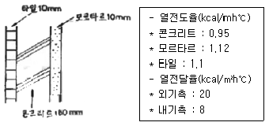
- 2.61 kcal/mh℃
- 2.61 kcal/m2h℃
- 0.004 kcal/mh℃
- 0.004 kcal/m2h℃
(정답률: 58%)
102. 다음 중에서 건물외피의 결로방지 대책으로 부적당한 것은?
- 실내의 환기가 골고루 이루어지게 한다.
- 내단열의 경우 방습층을 단열재의 고온측에 설치한다.
- 외피재료의 구성은 실내측으로 갈수록 단열저항이 큰 재료를 사용한다.
- 외피의 실내측 표면온도를 실내공기의 노점온도 이상으로 유지케 한다.
(정답률: 22%)
103. 겨울철 내부결로의 위험이 있는 구조체에 방습재 및 단열재의 설치위치로 가장 적합한 것은?
- 단열재는 고온측, 방습재는 저온측
- 단열재는 저온측, 방습재는 고온측
- 단열재, 방습재 모두 고온측
- 단열재, 방습재 모두 저온측
(정답률: 60%)
104. 환기에 관한 설명 중 옳지 않은 것은?
- 창문이 닫혀 있을 경우에도 압력차가 크면 환기가 발생한다.
- 실내외의 압력이 같아지는 면을 중성대라 한다.
- 환기의 발생은 개구부 양측의 온도차와 풍압차에 의해서 일어난다.
- 실내공기오염의 척도로는 주로 CO 농도를 사용한다.
(정답률: 29%)
1⑤. 실내 탄산가스 농도를 900 ppm으로 유지하기 위해 필요한 환기량은?(단, 호기 중의 탄산가스 토출량이 0.013m3/hㆍ인, 대기중의 탄산가스 농도는 400 ppm으로 한다.)
- 26m3/hㆍ인
- 39m3/hㆍ인
- 52m3/hㆍ인
- 65m3/hㆍ인
(정답률: 12%)
106. 스테판-볼츠만의 법칙에 관한 다음 설명 중 옳은 것은?
- 물체에서 복사되는 열량은 표면의 절대온도에 반비례한다.
- 물체에서 복사되는 열량은 표면의 절대온도의 2승에 비례한다.
- 물체에서 복사되는 열량은 표면의 절대온도의 3승에 비례한다.
- 물체에서 복사되는 열량은 표면의 절대온도의 4승에 비례한다.
(정답률: 36%)
107. 건축물의 주광(晝光)이용계획에 관한 설명으로 가장 거리가 먼 것은?
- 양측 채광을 한다.
- 천창은 현휘를 감소하기 위해 밝은 색이나 흰색으로 마감한다.
- 높은 곳에서 주광을 사입시키며, 창문의 높이는 최소한 실 깊이의 1/3 이상에 오도록 설치한다.
- 주광을 확산 분산시킨다.
(정답률: 43%)
108. 음의 성질에 대한 설명 중 옳지 않은 것은?
- 음파가 한 매질에서 타 매질로 통과할 때 구부러지는 현상을 음의 굴절이라 한다.
- 마스킹 효과(Masking effect)는 음파의 간섭에 의해 일어난다.
- 음의 파장은 음속과 주파수를 곱한 값이다.
- 인간의 가청주파수의 범위는 20 ~ 20000Hz 이다.
(정답률: 70%)
109. 음에 관한 다음 기술 중 틀린 것은?
- 음세기 레벨을 40dB 내리는데는 음의 세기를 1/1000로 해야 한다.
- 인간의 감각은 80phon과 70phon의 소음차는 60phon과 50phon의 소음차와 같게 들린다.
- 1대에 70dB의 소음을 내는 기계를 4대 넣으면, 실내의 소음레벨은 약 76dB이 된다.
- 95dB의 소음과 80dB의 소음이 동시에 존재해도 합계레벨은 약 95dB이다.
(정답률: 29%)
110. 다음 설명 중 옳지 않은 것은?
- 기상조건에 의한 음의 감쇠치는 습도가 낮을수록 증가한다.
- 기상조간에 의한 음의 감쇠치는 기온이 낮을수록 증가한다.
- 점음원의 거리 감쇠는 거리가 2배가 될 때 마다 음압레벨은 6dB씩 감소한다.
- 선음원의 거리 감쇠는 거리가 2배가 될 때 마다 음압레벨은 5dB씩 감소한다.
(정답률: 23%)
111. 실내 직접조명 설계시 벽 가까운 공간에서 작업을 하는 경우, 벽과 광원사이의 간격으로 적당한 것은? (단, H는 광원과 작업면사이의 높이)
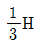
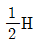
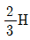
- 1H
(정답률: 53%)
112. 배수관에 설치되는 통기관의 설치목적으로 가장 거리가 먼 것은?
- 트랩의 봉수를 보호한다.
- 배수관내 기압을 일정하게 유지한다.
- 배수관내 수격작용을 방지한다.
- 배수관내 배수흐름을 원활히 한다.
(정답률: 34%)
113. 차양장치에 대한 설명 중 옳지 않은 것은?
- 수평차양은 남향창에 설치하는 것이 유리하다.
- 외부차양 장치보다 내부차양 장치가 직사광선 차단에 유리하다.
- 수직차양은 남향보다 동, 서향의 창에 유리하다.
- 차양장치를 적절히 이용하면 자연채광을 유효하게 활용할 수 있다.
(정답률: 59%)
114. 측광량(測光量)을 표시하는 단위의 연결로 옳지 않은 것은?
- 휘도 - candela/m2
- 광도 - candela
- 조도 - lux
- 광속 - watt
(정답률: 73%)
115. 채광계획에 관한 설명으로 옳지 않은 것은?
- 직사일광의 직접 유입이 채광상 유리하다.
- 실내천장의 반사율은 벽의 반사율보다 큰 것이 좋다.
- 실내 조도의 변동이 적은 것이 유리하다.
- 현휘가 있지 않도록 한다.
(정답률: 54%)
116. 다음 중 잔향시간(T) 계산법으로 옳은 것은? (단,
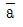
평균흡음율, S : 건물내부의 전 표면적(m2), V : 실의 체적(m3))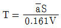
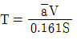
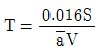
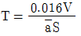
(정답률: 22%)
117. 여름철 일사를 받는 대공간 아트리움의 환기시 자연환기가 발생되는 주동력원은 무엇인가?
- 밀도차에 의한 환기
- 풍압차에 의한 환기
- 습도차에 의한 환기
- 개구부에 의한 환기
(정답률: 17%)
118. 다음 중 최저 필요압력이 가장 작은 위생기구는?
- 세정밸브
- 자동밸브
- 샤워
- 보통밸브
(정답률: 12%)
119. 실내온열환경의 물리적 4대 요소는?
- 기온, 기류, 습도, 복사열
- 기온, 기류, 복사열, 착의량
- 기온, 복사열, 습도, 활동량
- 기온, 기류, 습도, 활동량
(정답률: 35%)
120. 주파수가 150Hz이고, 전파속도가 60m/s 인 파동의 파장은 얼마인가?
- 0.25m
- 0.40m
- 0.55m
- 2.50m
(정답률: 18%)